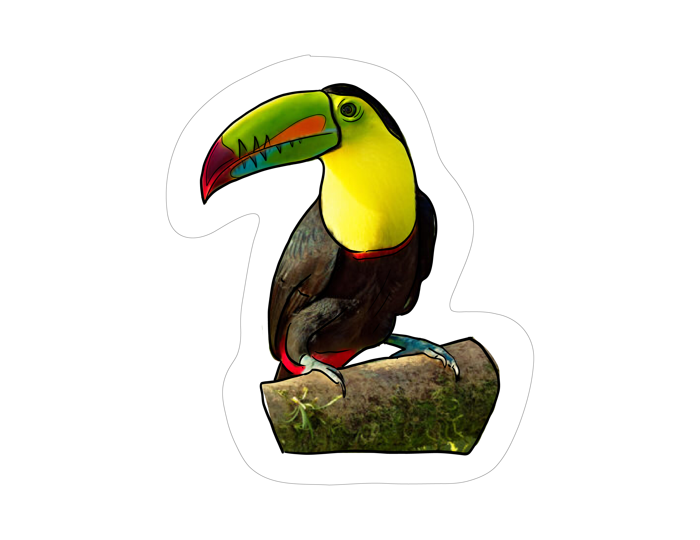
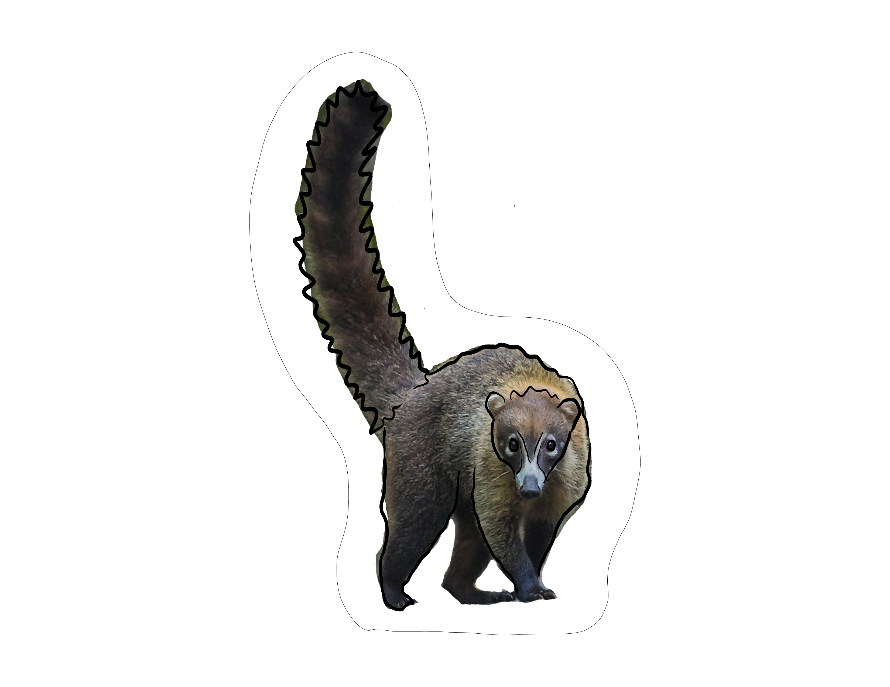

<!-- <div class="grid-layout">
  <div class=" imagen1 news-stories animate__animated animate__fadeInDown" style=" background-size: cover; z-index: 30;  
  " routerLink="/revertidas">
    <h1 style="margin: 0 auto; font-size: 20px; " class="titulo" >AREAS REVERTIDAS</h1>
  </div>


  <div class=" quick-links animate__animated animate__fadeInUp" style="background-image: url(../../../assets/images/canal6.png); background-size: cover;z-index: 31;  filter: brightness(50%);" >
 
  </div>
  <div class="imagen2 twitter-feed animate__animated animate__fadeInLeft" style="z-index: 35; " routerLink="/mapazoom">
    <h1 style="margin: 0 auto;font-size: 20px;" class="titulo">CUENCA HIDROGRAFÍCA</h1>
  </div>
  <div class="imagen3 whats-on animate__animated animate__fadeInRight" style=" background-size: cover; z-index: 30; " routerLink="/ampliacion" >
    <h1 style="margin: 0 auto; font-size: 20px; " class="titulo">EL CANAL DE PANAMÁ EN  EL SIGLO XX</h1>
  </div>
<-- Aqui va el footer -->

  <!-- <footer class="text-center text-lg-start animate__animated animate__fadeInUp"  style="background-color:  rgb(21, 63, 153);">
    <div class="container d-flex justify-content-center py-5">
       <div class="text-center text-white p-3" >
     
      
    </div>
    </div>

    <div class="waves" >
      <div class="wave circulo a"></div>
      <div class="wave circulo b"></div>
      <div class="wave circulo c"></div>
    </div>
  </footer> -->

  <!-- </div> --> 

  <!-- Aqui va el footer -->

  <div class="fondo" >

    <div class="titulo animate__animated animate__flipInX">
    
    </div>

    <div class="linea_lateral">

    </div>
    

    
<!-- Imagen de cuenca -->

    
    <!-- Imagen de cuenca -->

    <!-- Areas Revertidas -->
  
 <!-- Areas Revertidas -->

  <!-- Canal Siglo Xii -->

 <!-- Canal Siglo Xii -->


<!-- Boton de ingles español -->

<!-- Boton de ingles español -->


 <div class="helicoptero ">
    
  </div> 

  <div class="tucan ">
    
  </div> 

  <div class="tanque ">
    
  </div> 

  <div class="locomotora ">
    
  </div>
  
  <div class="mapache">
    
  </div> 


   
  </div>


  

 